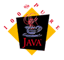

Features
Any Java Applications with persistent objects involved, might use
a mechanism to delegate the mapping between the Application and another target-system.
JOMM might be one alternative solution for this specific problem.

Application development in Java
- Persistent Java-classes are described by a target-independent Descriptor (for e.g.
inheritance or relationships (1:1, 1:n, n:n) designed by static UML classdiagrams)
- Borrowed ideas of JDO and ODMG, like proper transaction behaviour etc
- Client/Server support where Server is a DBMS
- Alternative persistency mapping to XML-instance
- Support for enumeration or code types
- NLS structures for multilingual applications
- Alternative for non-standardized identity-mechanism
- etc
Supported SQL-DBMS targets
- MySQL
- PostgreSQL
- HSQLDB
- Oracle
- MS Access
- Others may easily be extended...
Supported XML targets